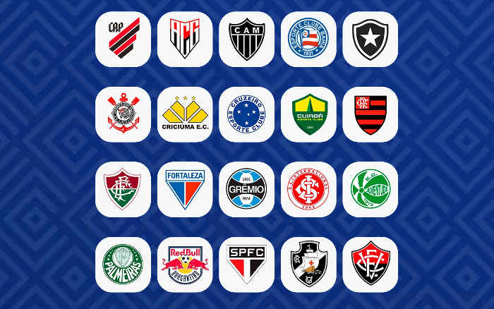
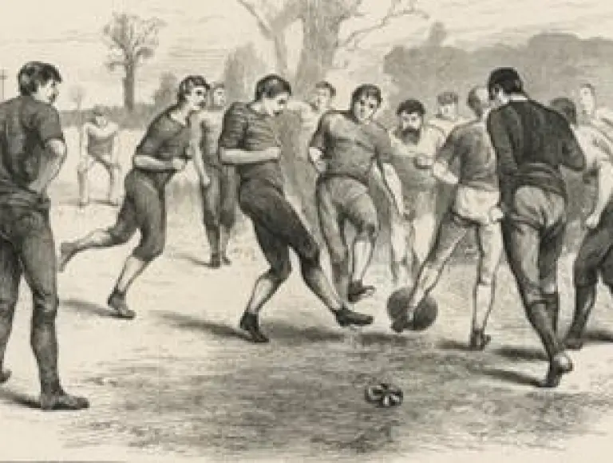

Os times da Série A do Campeonato Brasileiro podem mudar de uma temporada para outra devido ao sistema de
acesso e rebaixamento. No entanto, aqui está uma lista dos times que participaram da Série A na
temporada 2023:
Athletico Paranaense
Atlético Mineiro
Atlético Goianiense
Botafogo
Ceará
Corinthians
Coritiba
Cruzeiro
Flamengo
Fluminense
Fortaleza
Goiás
Grêmio
Internacional
Palmeiras
Santos
São Paulo
Red Bull Bragantino
Vasco da Gama
Bahia.
Jogadores em Destaque
Veja os jogadores que estão se destacando no cenário mundial.
Competições Importantes
Os times da Série A do Campeonato Brasileiro, também conhecidos como Brasileirão, participam de várias
competições ao longo da temporada. Aqui está um resumo das principais:
1. Campeonato Brasileiro Série A: É a competição principal onde os clubes competem para se sagrar
campeões nacionais. Consiste em um torneio de pontos corridos, onde cada equipe joga contra todas as
outras duas vezes, uma em casa e outra fora. O time com mais pontos no final da temporada é declarado
campeão.
2. Copa do Brasil: Uma competição de eliminação direta que envolve clubes de diferentes divisões do
futebol brasileiro. As equipes da Série A entram nas fases mais avançadas e competem em partidas de ida
e volta até a final, que também é decidida em dois jogos. O vencedor ganha uma vaga na Taça
Libertadores.
3. Taça Libertadores: Principal competição de clubes da América do Sul. Os times da Série A que se
classificam (geralmente os primeiros colocados da Série A, além dos vencedores da Copa do Brasil e
outras competições nacionais) competem em um torneio continental que inclui fases de grupos e mata-mata.
4. Copa Sul-Americana: Considerada a segunda competição de clubes mais importante da América do Sul.
As equipes que não se classificam para a Libertadores, mas que têm boas campanhas no Brasileirão, podem
disputar esta competição. Funciona de forma semelhante à Libertadores, com fases de grupos e mata-mata.
5. Supercopa do Brasil: Um torneio que reúne o campeão do Campeonato Brasileiro e o vencedor da Copa
do Brasil do ano anterior. É uma competição anual que decide o supercampeão do futebol brasileiro.
Essas competições proporcionam aos clubes da Série A uma variedade de desafios e oportunidades de
sucesso tanto nacional quanto internacional.
A Origem do Futebol
O futebol tem origens antigas e diversas, mas a versão moderna do
esporte como conhecemos hoje começou a se formar na Inglaterra durante o século XIX. A prática de chutar uma
bola com os pés já era comum em várias culturas antigas, como os egípcios, chineses e romanos. No entanto,
essas versões eram bastante diferentes do futebol contemporâneo.
Na Inglaterra, diversas formas de futebol eram jogadas em escolas e universidades, mas sem regras uniformes.
Em 1863, foi fundada a Football Association (FA), que estabeleceu as primeiras regras padronizadas do jogo,
conhecidas como "Regras da FA". Essas regras diferenciavam o futebol do rugby, outro esporte popular na
época, e ajudaram a formalizar o futebol como um esporte distinto.
A partir da Inglaterra, o futebol se espalhou para outras partes do mundo, sendo popularizado em diversos
países ao longo dos anos. A criação da FIFA em 1904 e a realização da primeira Copa do Mundo em 1930
marcaram momentos importantes na história global do futebol, solidificando sua popularidade e sua
importância no cenário esportivo internacional.
Contato
Envie suas perguntas e sugestões através do formulário abaixo.